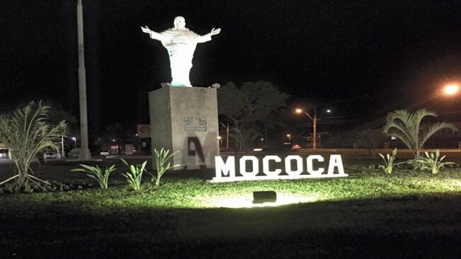
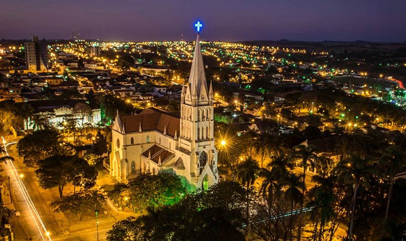
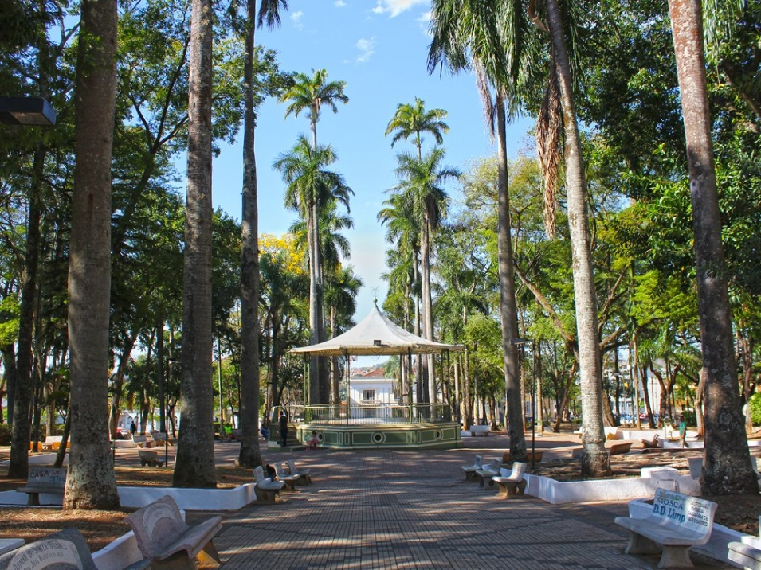

Mococa possui uma economia diversificada que combina a força da agropecuária, do comércio, da indústria e do turismo. O município tem mostrado crescimento constante, com destaque para a abertura de novas empresas, inclusive digitais, o que demonstra o dinamismo e o espírito empreendedor local. A cidade também lidera a geração de empregos na região, reforçando sua importância econômica no interior paulista.

A população de Mococa é de cerca de 67 mil habitantes, com um perfil predominantemente urbano e levemente feminino. A cidade tem uma rica diversidade cultural, fruto da imigração italiana, alemã, espanhola, portuguesa e libanesa, que contribuiu para sua formação histórica e social. O Índice de Desenvolvimento Humano (IDH) da cidade é considerado alto, refletindo bons indicadores de educação, renda e longevidade.

A indústria em Mococa é marcada principalmente pela presença da tradicional empresa Mococa S/A Produtos Alimentícios, fundada em 1919. Ela é uma referência nacional no setor de laticínios, produzindo itens como leite condensado, creme de leite, bebidas lácteas, entre outros, que são distribuídos em todo o Brasil e exportados para países da América Latina e África. A empresa adota práticas sustentáveis e mantém certificações de qualidade reconhecidas.

Além da economia e indústria, Mococa se destaca culturalmente com um patrimônio histórico rico, incluindo casarões do ciclo do café e importantes espaços culturais, como a Casa de Cultura Rogério Cardoso. A cidade também conta com áreas verdes preservadas, como o Parque Ecológico São Sebastião, que contribuem para a qualidade de vida dos moradores e atraem turistas interessados em natureza e história.
Elaborado por: Lavyni Santana